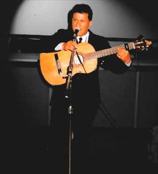
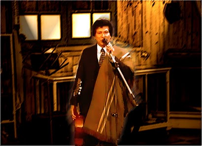

Dardo Noguera le canta a su Chaco y a la Patria Entera
Dardo Noguera, nació en Campo Largo y fue criado en Puerto Barranqueras, Provincia del Chaco (Argentina) donde efectuó sus estudios primarios y comenzó
a incursionar en el mundo de la música desde muy pequeño, a partir del incentivo que recibió de su padre, don
Cándido Noguera, excelente músico, a quien está
profundamente agradecido.
-El arte en mi vida, significa “mi vida”-.
"Me bastan un poncho y una guitarra para cantarle a mi gente, al amor, a los que luchan sin descanso.
Me regocijo escuchando buena música, leyendo buenos libros y poemas para tratar de aprender,
Cada día mi arte se representa en todo lo que hago, en todo lo que siento y en cada una de las personas a las |
 |
|---|
Le doy inmenso valor a aquellas cosas que construimos con mucho sacrificio; a los hombres y mujeres que solidariamente ayudan a los demás, muchas veces
sin conocerlos personalmente.
Son conceptos que vienen enraizados desde la cuna y hacen grandes a las personas.
En general, en mí pesa todo aquel ser humano que respeta a otro ser humano sin diferenciar credos ni religiones, ni modas ni nada externo ni material.
Doy valor a mis afectos y mis logros, a mis amigos y a mis colegas y finalmente, a la vida que tengo que permite hoy decirle a Uds. todo esto.
En cambio, no le doy importancia a los que no hacen nada y critican. A los egoístas, porque no les agrada nada y muchas veces mienten, falsean y traicionan.
Desvalorizo lo efímero, lo banal, lo estúpido y cualquier cosa que pueda perjudicar la paz de mi mundo personal.
Como persona trato de ser mejor, doy gracias a Dios y a la vida por despertar cada día y por enseñarme a ser noble, leal, desinteresado, y
por sobre todas las cosas: solidario.
Tener siempre la mano tendida y bondad en el corazón.
Es desde allí, desde ese sentimiento y esa forma de ver la vida, desde donde nace mi música y cada nota de mi guitarra a la hora de cantar.
Mi música es un espejo de lo que soy como persona, en cada acorde y en cada estrofa siempre está impreso lo que soy.
 |
Como Padre, siempre luché para dar a mi hijos, todo lo que estuvo a mi alcance : En primer lugar, educar con buenos ejemplos. En segundo lugar, estudios para sepan defenderse en la vida. Que aprendan a ver que las cosa,s no se hacen de golpe; todo cuesta, todo es lucha y sacrificio para llegar a una meta. Toda fruta tiene su tiempo de maduración. Aprendí a ser padre con mis hijos, ellos deberían responder esta pregunta. |
|---|
Como profesional trato de superarme cada día más, estudiando y entendiendo que nunca se llega a la perfección total. Siempre tratar de mejorar.
Es por ello que en la búsqueda que propone el arte de la música fui llegando a diferentes lugares y a diferentes personas que han hecho crecer mi canto.
En este último tiempo tuve la gran fortuna de llegar al Círculo de Poetas de La Ciudad de Buenos Aires, es allí donde conozco a los Poetas Carlos
Alberto Dávila y a Ramón de Almagro, a quienes tuve el privilegio de musicalizar sus poemas.
Consecuente con mi pensar, respetuoso del arte de otros y compañero de aquellos que luchan por el sentir popular, es el modo de llevar adelante mi profesión.
Hoy en Buenos Aires, donde vivo, todo se hace más difícil.
Sigo luchando por mi amor al Arte; aunque muchas veces se me empantana el carro de la esperanza
pero debo seguir porque ése es el camino que me encomendó mi tierra natal, el Chaco,al partir.
Con Afecto Chaqueño
Dardo Noguera"
http://www.dardonoguera.blogspot.com/
http://www.myspace.com/dardonoguera10
Sonorización: Pujol- Imágenes de Abril- Ausencia- mid.